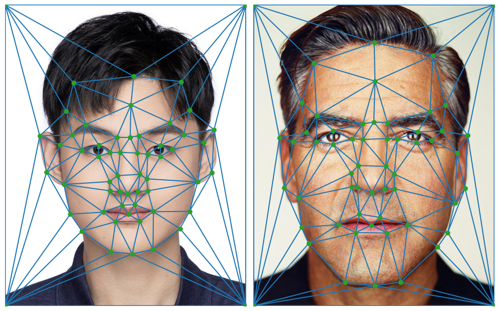
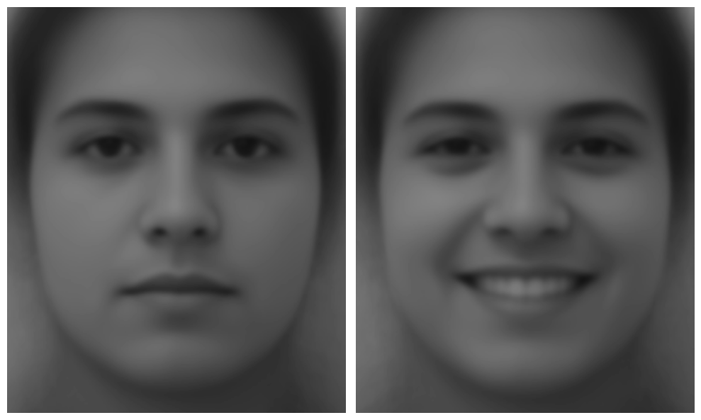
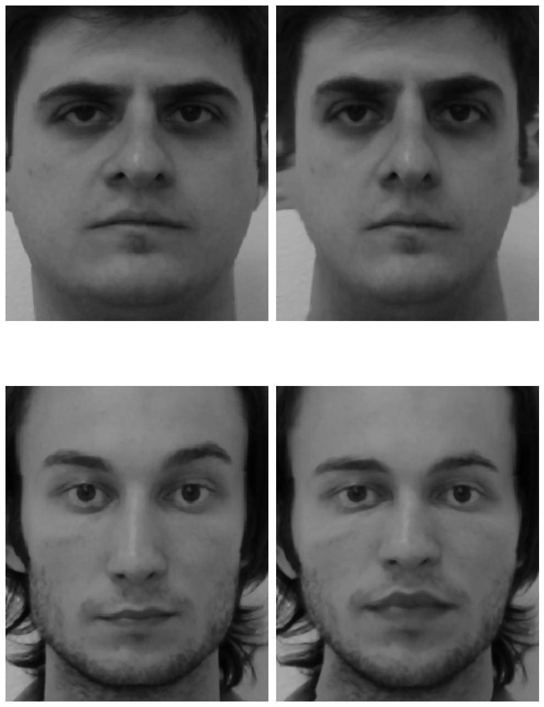
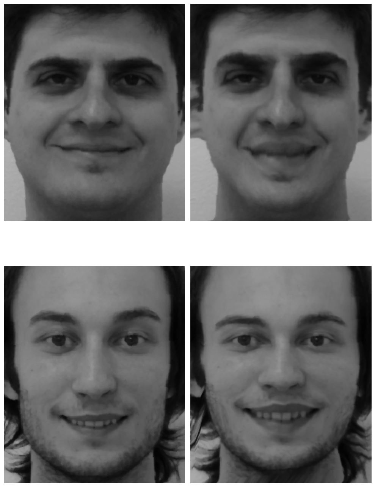
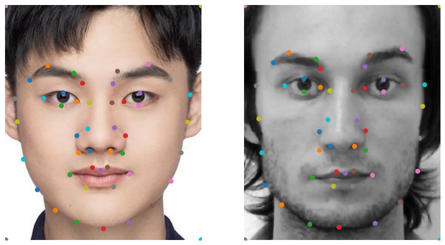
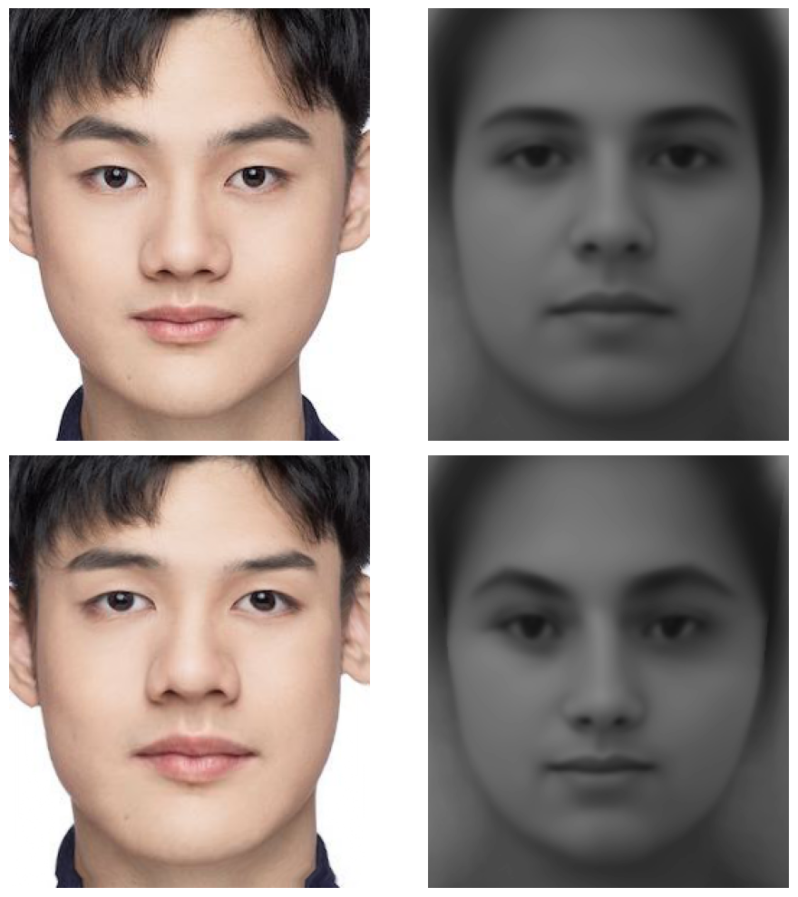
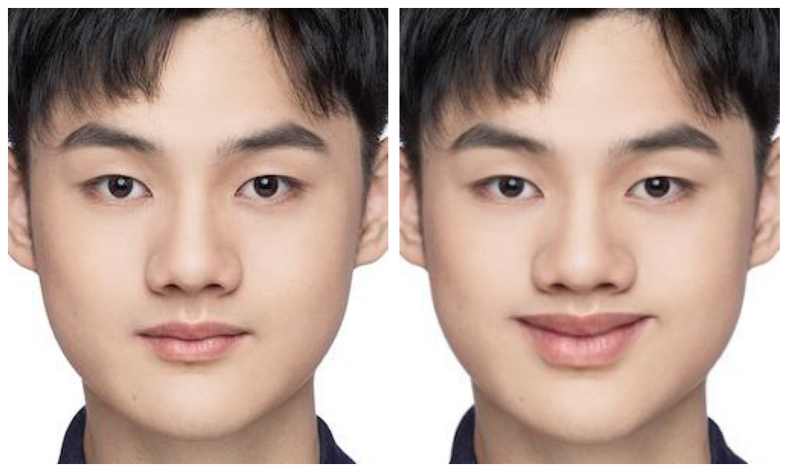

In this project, I implemented a inverse warping function which enables morphing and averaging faces. Specifically, I first manually annotated two image (of me and George), computed the mean image, and computed a gif that morphes my face to George's. Then, I use the FEI human face dataset to compute the mean face of neutral and smiling faces. I used these faces to do morphing and make the image of me smile!
Part 1: Defining Correspondences
I download the portrait of George and a passport photo of myself. Then, I use the online tool and manually select 54 corresponding keypoints on the two faces. I also add the 4 corners, making the total number of keypoints 58. Then, I used the scipy's Delaunay triangulation to triangulate the keypoints (I use the mean keypoints across the two images to generate the triangulation consistently). The keypoints and triangulation is shown below.

Keypoints and Triangulation, left: Zekai (Me), right: George
Part 2: Computing the "Mid-way Face"
I take the mean of the keypoints (across the two images) to form the mid-way geometry. Then, I warp the two images to the mid-way geometry using the inverse warping function. Specifically, I implemented the computeAffine function, which takes in 2D source triangle vertex coordinates and 2D target triangle vertex coordinates, and returns the affine transformation matrix that maps any homogeneous coordinate in the source triangle to that in the target triangle. To do so, I first do a change of basis to the source triangle, then I do another change of basis to map points to the target triangle. By using traingle masks and linear interpolation, I inverse-warp the two images to the mid-way geometry while only looping through the triangles, not the pixels. Finally, I cross-dissolve the warpped images to get the mid-way face. The mid-way face, as well as the original images of George and me, are shown below. The visual artifacts are mainly due to neck, clothing, and hair. The face itself is processed pretty well.
We can control the morphing process by varying the wrap_frac and the dissolve_frac parameter. Since we are taking a convex combination of the keypoints from the two images to form the geometry, and using a convex combination of the pixel colors of the two warpped images to cross-dissolve, the wrap_frac and the dissolve_frac parameter can describe how close we are to each original image. I uniformly sample 46 ratios from 0 to 1, and plug it as both the wrap_frac and the dissolve_frac parameter to get the morph sequence. The 30 fps gif of the morph sequence is shown below. Again, visual artifacts are mainly due to neck, clothing, and hair. Of course I am supposed to have more hair that our relative senior George!
The Morph Sequence from Zekai to George, and back to Zekai
Part 4: The "Mean Face" of a Pupulation
I choose part of the FEI Face Database as the dataset, which consists of 400 grayscale images of 200 individuals (100 male and 100 female). The individuals are mainly students and staff at Centro Universitário da FEI. For each individual, one photo is taken with the individual in a neutral expression, and the other photo is taken with the individual in a smiling expression. The dataset annotation provides 46 corresponding keypoints for each image. I first computed the mean neutral geometry and the mean smiling geometry by taking the average of the keypoints' coordinates across the neutral and smiling faces. Then, I warp the neutral faces and the smiling faces to the mean geometry using inverse warping. Finally, I cross-dissolve the warpped images to get the mean neutral face and the mean smiling face. The mean faces are shown below (they are calculated by me, not the mean face provided by the dataset).

Mean Faces, left: the Mean Neutral Face, right: the Mean Smiling Face
For visualization purposes, below are a few examples of the neutral faces and the smiling faces in the dataset, as well as the warpped images to the mean geometry.

Neutral Faces, left: Original, right: Morphed to Mean Neutral Geometry

Smiling Faces, left: Original, right: Morphed to Mean Smiling Geometry
After calculating the mean faces, I can morph my (neutral) picture to the mean neutral geometry, and can morph the mean neutral face to the geometry of my picture. For my picture, I select the same 46 keypoints and the 4 corners manually. The morphed images, as well as my origina picture and the mean neutral face, are shown below. For completeness, the keypoints of an image from the dataset and my iamge are also shown below.

Annotated Keypoings, left: Zekai (Manual Annotation), right: Example (from Dataset)

Morphing between Zekai and Mean Neutral Face
upper left: Zekai (Me),
upper right: Mean Neutral Face,
lower left: Zekai Morphed to Mean Neutral Geometry,
lower right:Mean Neutral Face Morphed to Zekai's Geometry
Part 5: Caricatures: Extrapolating From the Mean
For extrapolation, I only extrapolate geometry. Specifically, I take a affine combination of the coordinates of my pictures' keypoints and the mean neutral face's keypoints according to a factor: alpha. Alpha equaling 1 means the affine combination is exactly my original keypoints, and alpha equaling 0 means the afine combination is exactly the mean neutral face's keypoints. I choose alpha being 1.5 and -0.5 (thus extrapolating from my face and the mean neutral face), and the morphed faces of me are shown below.
As the great Joker of Gotham says, "Why so serious?". I want to make the picture of me smile! I extract a "smiling geometry vector", namely the difference between the mean smiling face's keypoints and the mean neutral face's keypoints. Then, I add the "smiling geometry vector" to my original keypoints to get the "smiling keypoints". Afterwards, I warp my original picture to the "smiling keypoints" using the inverse warping function. The original and the morphed images are shown below ... why so serious?

Why So Serious, left: Original, right: Smiling
{kind=link}